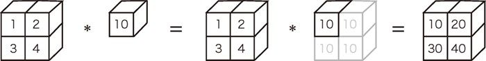
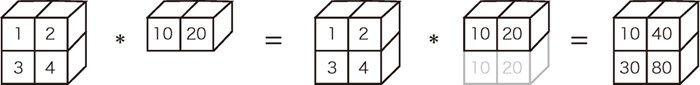

NumPy 数组（
NumPy 数组（np.array）可以生成 N 维数组，即可以生成一维数组、二维数组、三维数组等任意维数的数组。数学上将一维数组称为向量，将二维数组称为矩阵。另外，可以将一般化之后的向量或矩阵等统称为张量（tensor）。本书基本上将二维数组称为“矩阵”，将三维数组及三维以上的数组称为“张量”或“多维数组”。
在深度学习的实现中，经常出现数组和矩阵的计算。NumPy 的数组类（numpy.array）中提供了很多便捷的方法，在实现深度学习时，我们将使用这些方法。本节我们来简单介绍一下后面会用到的 NumPy。
NumPy 是外部库。这里所说的“外部”是指不包含在标准版 Python 中。因此，我们首先要导入 NumPy 库。
>>> import numpy as np
Python 中使用 import 语句来导入库。这里的 import numpy as np，直译的话就是“将 numpy 作为 np 导入”的意思。通过写成这样的形式，之后 NumPy 相关的方法均可通过 np 来调用。
要生成 NumPy 数组，需要使用 np.array() 方法。np.array() 接收 Python 列表作为参数，生成 NumPy 数组（numpy.ndarray）。
>>> x = np.array([1.0, 2.0, 3.0]) >>> print(x) [ 1. 2. 3.] >>> type(x) <class 'numpy.ndarray'>
下面是 NumPy 数组的算术运算的例子。
>>> x = np.array([1.0, 2.0, 3.0]) >>> y = np.array([2.0, 4.0, 6.0]) >>> x + y # 对应元素的加法 array([ 3., 6., 9.]) >>> x - y array([ -1., -2., -3.]) >>> x * y # element-wise product array([ 2., 8., 18.]) >>> x / y array([ 0.5, 0.5, 0.5])
这里需要注意的是，数组 x 和数组 y 的元素个数是相同的（两者均是元素个数为 3 的一维数组）。当 x 和 y 的元素个数相同时，可以对各个元素进行算术运算。如果元素个数不同，程序就会报错，所以元素个数保持一致非常重要。另外，“对应元素的”的英文是 element-wise，比如“对应元素的乘法”就是 element-wise product。
NumPy 数组不仅可以进行 element-wise 运算，也可以和单一的数值（标量）组合起来进行运算。此时，需要在 NumPy 数组的各个元素和标量之间进行运算。这个功能也被称为广播（详见后文）。
>>> x = np.array([1.0, 2.0, 3.0]) >>> x / 2.0 array([ 0.5, 1. , 1.5])
NumPy 不仅可以生成一维数组（排成一列的数组），也可以生成多维数组。比如，可以生成如下的二维数组（矩阵）。
>>> A = np.array([[1, 2], [3, 4]])
>>> print(A)
[[1 2]
[3 4]]
>>> A.shape
(2, 2)
>>> A.dtype
dtype('int64')
这里生成了一个 2 × 2 的矩阵 A。另外，矩阵 A 的形状可以通过 shape 查看，矩阵元素的数据类型可以通过 dtype 查看。下面，我们来看一下矩阵的算术运算。
>>> B = np.array([[3, 0],[0, 6]])
>>> A + B
array([[ 4, 2],
[ 3, 10]])
>>> A * B
array([[ 3, 0],
[ 0, 24]])
和数组的算术运算一样，矩阵的算术运算也可以在相同形状的矩阵间以对应元素的方式进行。并且，也可以通过标量（单一数值）对矩阵进行算术运算。这也是基于广播的功能。
>>> print(A)
[[1 2]
[3 4]]
>>> A * 10
array([[ 10, 20],
[ 30, 40]])
np.array）可以生成 N 维数组，即可以生成一维数组、二维数组、三维数组等任意维数的数组。数学上将一维数组称为向量，将二维数组称为矩阵。另外，可以将一般化之后的向量或矩阵等统称为张量（tensor）。本书基本上将二维数组称为“矩阵”，将三维数组及三维以上的数组称为“张量”或“多维数组”。
NumPy 中，形状不同的数组之间也可以进行运算。之前的例子中，在 2×2 的矩阵 A 和标量 10 之间进行了乘法运算。在这个过程中，如图 1-1 所示，标量 10 被扩展成了 2 × 2 的形状，然后再与矩阵 A 进行乘法运算。这个巧妙的功能称为广播（broadcast）。

图 1-1 广播的例子：标量 10 被当作 2 × 2 的矩阵
我们通过下面这个运算再来看一个广播的例子。
>>> A = np.array([[1, 2], [3, 4]])
>>> B = np.array([10, 20])
>>> A * B
array([[ 10, 40],
[ 30, 80]])
在这个运算中，如图 1-2 所示，一维数组 B 被“巧妙地”变成了和二位数组 A 相同的形状，然后再以对应元素的方式进行运算。

图 1-2 广播的例子 2
综上，因为 NumPy 有广播功能，所以不同形状的数组之间也可以顺利地进行运算。
元素的索引从 0 开始。对各个元素的访问可按如下方式进行。
>>> X = np.array([[51, 55], [14, 19], [0, 4]]) >>> print(X) [[51 55] [14 19] [ 0 4]] >>> X[0] # 第0行 array([51, 55]) >>> X[0][1] # (0,1)的元素 55
也可以使用 for 语句访问各个元素。
>>> for row in X: ... print(row) ... [51 55] [14 19] [0 4]
除了前面介绍的索引操作，NumPy 还可以使用数组访问各个元素。
>>> X = X.flatten() # 将X转换为一维数组 >>> print(X) [51 55 14 19 0 4] >>> X[np.array([0, 2, 4])] # 获取索引为0、2、4的元素 array([51, 14, 0])
运用这个标记法，可以获取满足一定条件的元素。例如，要从 X 中抽出大于 15 的元素，可以写成如下形式。
>>> X > 15 array([ True, True, False, True, False, False], dtype=bool) >>> X[X>15] array([51, 55, 19])
对 NumPy 数组使用不等号运算符等（上例中是 X > 15），结果会得到一个布尔型的数组。上例中就是使用这个布尔型数组取出了数组的各个元素（取出 True 对应的元素）。